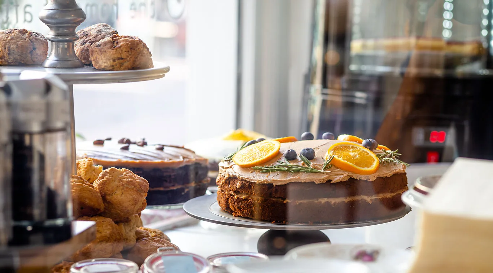
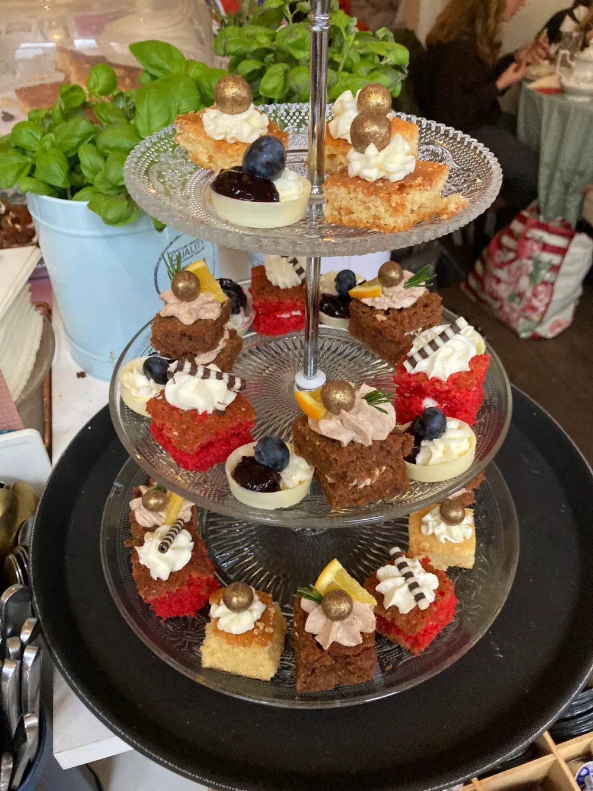
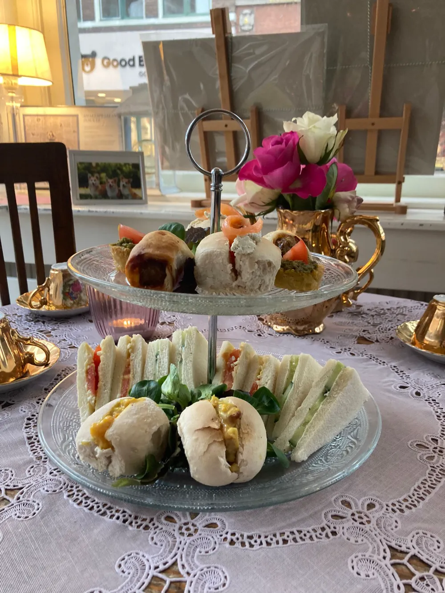
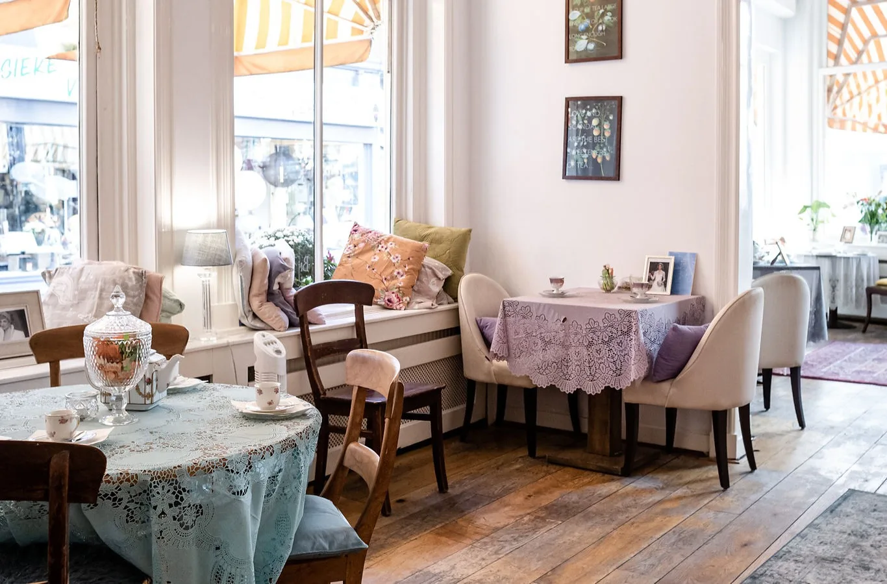
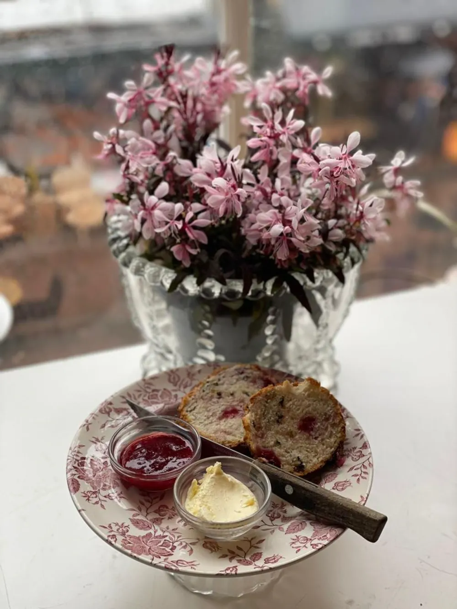
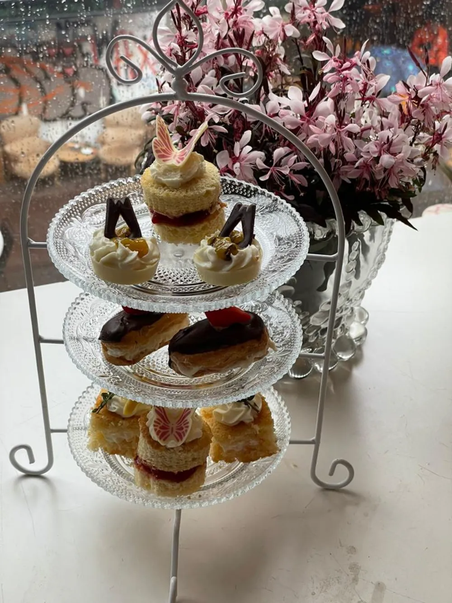
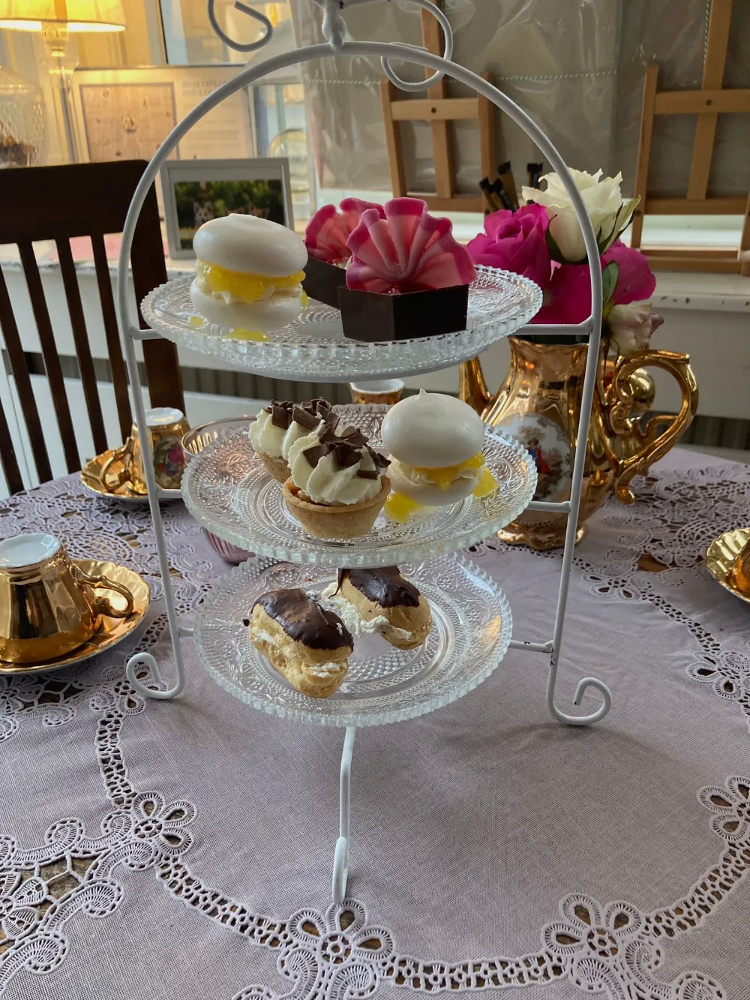
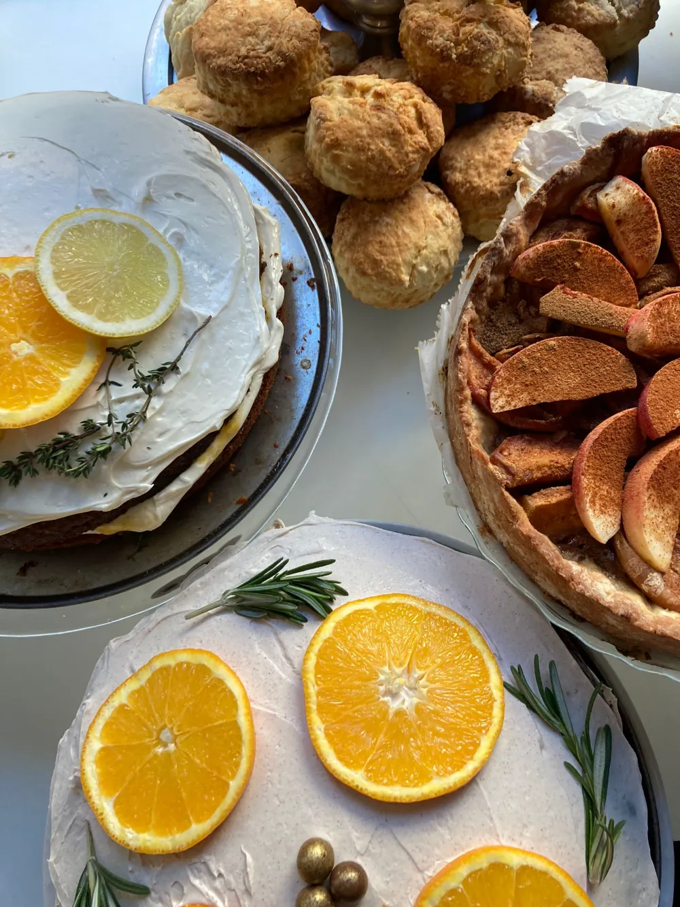

Welcome to Queens
Een Engelse tearoom waar je een kleine vakantie beleeft, midden in het centrum van Haarlem. Afternoon tea, scones naar ons familierecept en huisgemaakte taart, op vintage servies.
Kruisstraat 31, Haarlem
Christmas at Queens
The Queen’s Christmas Afternoon Tea
Christmas, the Queens way. Schuif aan, schenk de thee in en trakteer jezelf op onze feestelijke afternoon tea, geserveerd op zilveren étagères met alles erop en eraan. Eerst warme hartige canapés en feestelijke finger sandwiches, dan een vers gebakken Christmas scone, en tot slot onze seizoensdesserts. Perfect met vrienden, familie of die ene speciale persoon.
Alleen voor beperkte tijd. Reserveer op tijd om teleurstelling te voorkomen.
Reserveer de Christmas teaCanapés
Sausage Roll
Smoked Salmon Basket
Cucumber Wreath
Sandwiches
Brie & Cranberry Roll
Carpaccio Roll
Egg & Truffle Mayonnaise
Cucumber & Lemon Zest
Scones
Christmas Scone
Desserts
Chocolate Orange Christmas Pudding
Mince Pie
Raspberry Trifle
Red Velvet
Kerst voor thuis
Om te bestellen via onze webshop. Bewaar koel en droog, en haal de rozemarijn en de sterren-prikkers eraf voor het eten.
- The Queen’s Grand Macaron TreeLarge, pistachio & chocolate. 30 cm, 45+ pistachemacarons met pure chocoladeganache, rozemarijn, gouden sterren en een rode satijnen strik. Beperkt beschikbaar.€ 60,00
- The Little Princess Macaron TreeSmall, pistachio & chocolate. 18 cm, 20 macarons.€ 25,00
- Mini Cheesecake TreeRaspberry & white chocolate€ 6,00
- Mini Banoffee Christmas Tree € 6,00
- The Royal Scone WreathClassic sweet scones€ 35,00
- Herb Scone Christmas Wreath € 35,00
- The Everyone’s Invited WreathGluten-free scones€ 45,00
Our Afternoon Tea
Een traditie sinds 1840
Afternoon tea is begonnen door het originele IT-girl en socialite Anna, Duchess of Bedford, in 1840. Bij ons is het een complete belevenis van anderhalf uur, perfect voor een feestje of gewoon om bij te kletsen met vriendinnen.
Je krijgt een welkomstdrankje en onbeperkt onze speciaal gemengde thee. Treed in de voetsporen van de aristocratie en reserveer.
- Queen’s Afternoon Tea
- € 32,95 p.p.
- Kids version t/m 9 jaar, kleiner en kindvriendelijk
- € 20,00
- Glutenvrij of vegan ook mogelijk, vraag naar de prijs
Onze keuken is niet glutenvrij; kruisbesmetting is mogelijk.
Iets te vieren?
We maken speciale afternoon teas voor vrijgezellenfeesten, babyshowers en bruiloften. Ook bieden we een Engelse afternoon tea-belevenis voor schoolkinderen. Voor grote evenementen, grote groepen en catering kun je ons ook vragen. Mail naar info@queenstearoom.nl.
Limited editions
Houd onze socials in de gaten voor limited edition afternoon teas, zoals onze Harry Potter-belevenis.
Voorwaarden
Om je afternoon tea-reservering vast te leggen vragen we een aanbetaling van € 10 per gast. Bij aankomst wordt € 10 per aanwezige gast verrekend met de rekening. Aanbetalingen van gasten die niet komen vervallen. Elke afternoon tea-reservering duurt 1 uur en 30 minuten. Aanbetalingen worden niet terugbetaald, behalve in uitzonderlijke gevallen naar ons oordeel.







Order
Een hele taart voor thuis
Onze huisgemaakte taarten zijn ook in zijn geheel te bestellen via de webshop.
- Cinnamon and brown sugar apple pie best seller45,00
- Key lime pie45,00
- Banoffee pie45,00
- Chocolate caramel gluten free cake45,00
- Chocolate cake45,00
- Red velvet cake45,00
- Raspberry white chocolate cheesecake45,00
- Carrot cake45,00
- Poached pear and cinnamon cream tart35,00
Reserveer je plek
Reserveer online een tafel of mail ons op info@queenstearoom.nl. Voor reserveringen van meer dan 12 personen kun je ons het beste mailen.
We liggen in het drukke centrum van Haarlem, op een korte wandeling van station Haarlem en op 18 minuten van Schiphol.
Voor afternoon tea vragen we een aanbetaling van € 10 per gast, die bij aankomst wordt verrekend.
Contact
Queens Tearoom HaarlemKruisstraat 31
2011 PW Haarlem
info@queenstearoom.nl
Openingstijden
- Maandag t/m donderdag
- 10.00 – 17.30
- Vrijdag
- 10.00 – 19.00
- Zaterdag
- 09.30 – 19.00
- Zondag
- 09.30 – 19.00